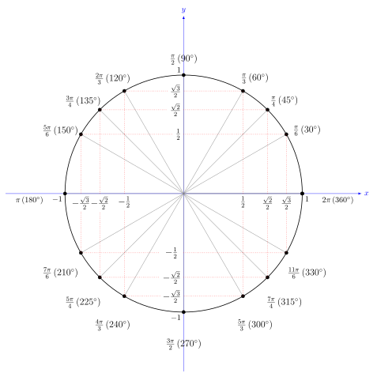
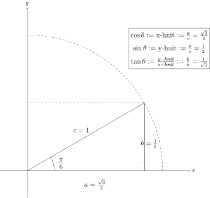
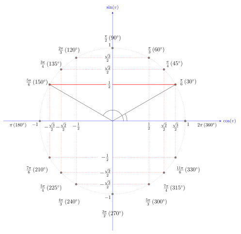
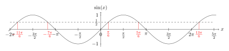
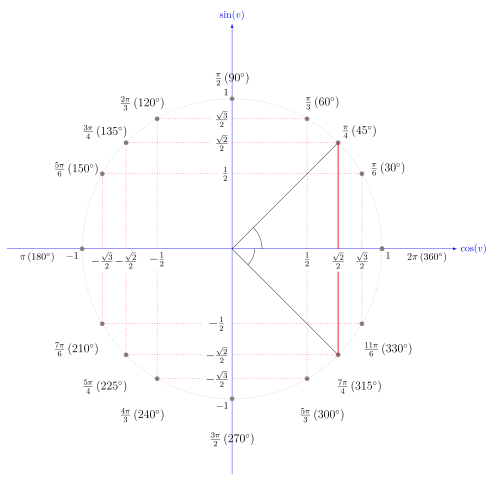
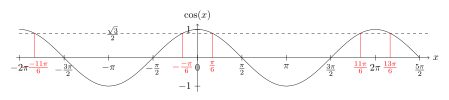
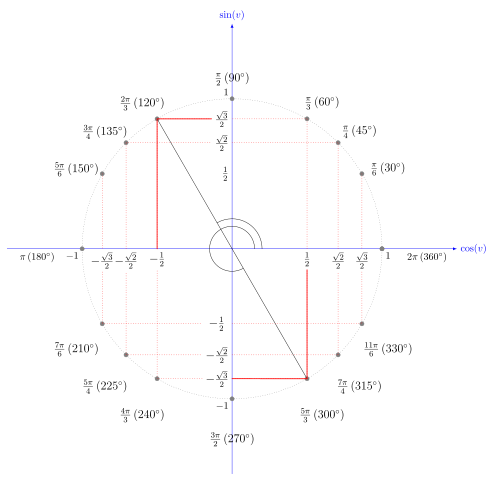
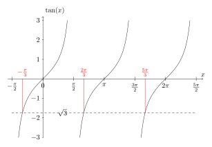
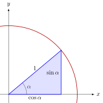

7. Hornaföll
7.1. Bogaeiningar
Í daglegu tali notum við yfirleitt mælieininguna
gráður
en: angular degree, degree, degree of angle, local degree, sexagesimal degree, valency, vertex degree
Smelltu fyrir ítarlegri þýðingu.
Smelltu fyrir ítarlegri þýðingu.
7.1.1. Skilgreining
Skilgreining
Látum \(\alpha\) vera horn. Köllum oddpunkt hornsins \(O\).
Teiknum hring með
geisla
en: radius
Smelltu fyrir ítarlegri þýðingu.
Smelltu fyrir ítarlegri þýðingu.
Athugasemd
Samkvæmt þessari skilgreiningu þá er heill hringur \(2 \pi\) bogaeiningar því það er
ummál
en: circumference, perimeter
Smelltu fyrir ítarlegri þýðingu.
Bogaeiningar eru oft kallaðar radíanar og þær má tákna með \(\text{Rad}\), en það er yfirleitt ekki gert. Ef það er ekki merkt að horn sé mælt í gráðum, þá er það mælt í radíönum.
Það er hægt að breyta á milli gráða og bogaeininga svona:
Dæmi 1
Skrifum \(\frac{\pi}{6}\) í gráðum.
Lausn
Til þess finnum við hversu stór hluti hornið \(\frac{\pi}{6}\) er úr hringnum, en heill hringur er \(2 \pi\). Höfum \(\frac{\pi/6}{2 \pi}=\frac{1}{12}\) , svo \(\frac{\pi}{6}\) er \(\frac{1}{12}\) úr hring. Nú þurfum við bara að margfalda þessa stærð með \(360^{\circ}\) og fáum \(\frac{1}{12}\cdot 360^{\circ} = 30^{\circ}\).
Það er líka hægt að nota formúlurnar í skilgreiningunni hér að ofan:
Dæmi 2
Skrifum \(70^{\circ}\) í bogaeiningum.
Lausn
Finnum hversu stórt hlutfall \(70^{\circ}\) er úr heilum hring, \(70/360\), og margföldum með \(2 \pi\). Fáum:
Lausnin er því að \(70^{\circ}=\frac{7}{18}\pi\). Það er líka hægt að nota formúlurnar í skilgreiningunni hér að ofan:
7.2. Kósínus og sínus
7.2.1. Eingingahringurinn
Hringurinn með miðju í punktinum \((0,0)\) í hnitakerfinu og radíus einn er kallaður
einingarhringurinn
en: unit circle
Smelltu fyrir ítarlegri þýðingu.
Smelltu fyrir ítarlegri þýðingu.
7.2.2. Kósínus og sínus
Nú er markmiðið að skýra stærðirnar \(\cos(\alpha)\) og \(\sin(\alpha)\).
Teiknum einingarhring í
hnitakerfið
en: coordinate system, system of coordinates
Smelltu fyrir ítarlegri þýðingu.
Munum að \(\alpha\) er horn í bogalengdum og er jafnt lengd bogans frá upphafspunktinum.
Þegar blýanturinn er búinn að ferðast um vegalengdina \(\alpha\) þá stoppum við og mörkum punktinn \(P\) inn á hnitakerfið þar sem stoppað var. Kósínus af horninu \(\alpha\) er nú skilgreindur sem \(x\)-hnit punktsins \(P\), og sínus af horninu \(\alpha\) er skilgreindur sem \(y\)-hnit punktsins \(P\). Við táknum þessi föll með \(\cos(\alpha)\) og \(\sin(\alpha)\).
{kind=link}
Athugasemd
Bæði kósínus og sínus eru \(2 \pi\)-
lotubundin
Hornafallið tangens, \(\tan\), er skilgreint sem hlutfallið á milli \(\sin\) og \(\cos\).
Þar sem \(\cos(\alpha) \neq 0\)
Hægt er að nota allar hliðar þríhyrningsins sem myndast til að finna gildin á \(\cos(\alpha), \sin(\alpha)\) og \(\tan(\alpha)\).
{kind=link}
Hér er \(c\) kölluð
langhliðin
en: hypotenuse
Smelltu fyrir ítarlegri þýðingu.
Smelltu fyrir ítarlegri þýðingu.
Smelltu fyrir ítarlegri þýðingu.
7.2.3. Amma illa
Sumum þykir þægilegt að nota eftirfarandi töflu til þess að muna hvaða hlutföll hliðanna gefur hvaða hornafall. Hér stendur \(\text{a}\) fyrir aðlæga skammhlið, \(\text{m}\) fyrir mótlæga skammhlið og \(\text{l}\) fyrir langhlið.
\(\cos\) af horni í þríhyrningi er aðlæg deilt með langhlið (\(\text{a}/\text{l}\)).
\(\sin\) af horni er mótlæg deilt með langhlið (\(\text{m}/\text{l}\)).
\(\tan\) er mótlæg deilt með aðlægri skammhlið (\(\text{m}/\text{a}\)).
7.3. Þekkt gildi á hornaföllum
Skoðum nú nokkur gildi á \(\alpha\) í samhengi við útskýringuna á hornaföllunum hér að ofan.
Munið að við látum blýant byrja í punktinum \((1,0)\) og færum okkur eftir einingarhringnum eins langt og \(\alpha\) segir til um, og endum í punkti \(P\).
Ef \(\alpha=0\) þá færum við okkur ekki neitt. Við endum í sama punkti og við byrjum í og þess vegna verður \(P=(1,0)\). Þess vegna er \(\cos(0)=1\) og \(\sin(0)=0\).
Ef \(\alpha=\pi/2\) þá færum við okkur rangsælis um fjórðung af hringnum (ummál hringsins er \(2\pi\)). Við endum semsagt í topppunkti hringsins sem hefur hnit \(P=(0,1)\) svo \(\cos(\pi/2)=0\) og \(\sin(\pi/2)=1\).
Ef \(\alpha=\pi\) þá færum við okkur rangsælis um hálfan hring. Þá erum við stödd í punktinum \(P=(-1,0)\) svo að \(\cos(\pi)=-1\) og \(\sin(\pi)=0\).
Vel þekkt gildi á hornaföllunum má lesa úr myndinni að neðan. Stærðir hornanna eru merktar utan á hringinn og \(x\) - og \(y\) - hnit þeirra eru merkt á ásana. Mikilvægt er að þekkja einingarhringinn og geta notað hann. Við lesum gildin á kósínus á \(x\) - ásnum og gildin á sínus á \(y\) - ásnum.
Þannig sést til dæmis á myndinni að \(\cos(5\pi/6)=-\frac{\sqrt{3}}{2}\) (\(x\)-ásinn) og \(\sin(5\pi/6)=\frac12\) (\(y\)-ásinn). Einnig er il dæmis \(\cos(7\pi/4)=\frac{\sqrt{2}}{2}\) og \(\sin(7\pi/4)=-\frac{\sqrt{2}}{2}\) og svona gætum við haldið áfram.

Aðvörun
Það getur borgað sig að hafa þessi gildi á hreinu!
Til þess að læra gildin getur reynst vel að skoða þríhyrningana sem myndast út frá einingarhringnum þegar \(\alpha\) tekur gildin \(\frac{\pi}{6}, \frac{\pi}{3} \text{ og } \frac{\pi}{4}\).
Hér er rétthyrndi þríhyrningurinn sem myndast þegar við erum í \(30°\) eða \(\frac{\pi}{6}\) stefnu:
{kind=link}

Hér er rétthyrndi þríhyrningurinn sem myndast þegar við erum í \(60°\) eða \(\frac{\pi}{3}\) stefnu:
{kind=link}
Hér er rétthyrndi þríhyrningurinn sem myndast þegar við erum í \(45°\) eða \(\frac{\pi}{4}\) stefnu:
{kind=link}
7.4. Tangens og kótangens
Við skilgreinum föllin tangens og kótangens þannig:
7.5. Myndir af hornaföllum
Hér eru myndir af gröfum hornafallanna, þar sem hornið er eftir \(x\) - ásnum. Takið eftir að öll föllin eru lotubundin með lotu \(2\pi\).
{kind=link}
{kind=link}
Takið eftir að kósínusinn lítur næstum alveg eins út og sínusinn, eini munurinn á gröfunum er að búið er að hliðra öðru um \(\frac{\pi}{2}\) miðað við hitt.
Sínusinn og kósínusinn eru takmörkuð föll, takmörkuð af einum að ofan og mínus einum að neðan. Það þýðir að þau taki aldrei gildi sem eru stærri en 1 eða minni en -1.
Athugasemd
Einn af mikilvægum eiginleikum \(\cos\) og \(\sin\) er að
\(\cos\) er jafnstætt fall: \(\cos(-\alpha) = \cos(\alpha)\)
\(\sin\) er oddstætt fall: \(\sin(-\alpha) = -\sin(\alpha)\)
{kind=link}
Tangensinn er ekki takmarkaður heldur stefnir á plús eða mínus óendanlegt á sumum stöðum.
Þá hefur \(\tan(x)\)
lóðfellur
en: asymptote
Smelltu fyrir ítarlegri þýðingu.
{kind=link}
Á sama hátt er kótangensinn eru ekki takmarkaður heldur stefnir á plús eða mínus óendanlegt á sumum stöðum. Einnig hefur \(\cot(x)\)
lóðfellur
en: asymptote
Smelltu fyrir ítarlegri þýðingu.
7.6. Hornafallareglur
Hornaföllin hafa marga nytsamlega eiginleika. Rökstyðjum hér nokkrar hornafallareglur:
1. Rökstyðjum að
Byrjum í punktinum \((1,0)\) og færum okkur rangsælis eftir einingarhringnum um vegalengdina \(\alpha\) . Mörkum þar punktinn \(P_1\). Færum okkur svo úr \((1,0)\) réttsælis um \(\alpha\) og mörkum þar inn \(P_2\).
{kind=link}
Auðvelt er að sjá að punktarnir hafa sömu \(x\)-hnit þannig að \(\cos(-\alpha)=\cos(\alpha)\) . Hins vegar hafa \(y\)-hnitin öfug formerki miðað við hvort annað, svo \(\sin(-\alpha)=-\sin(\alpha)\).
2. Rökstyðjum að
Við mörkum aftur tvo punkta inn á hnitakerfið.
\(P_1\) mörkum við með því að færa okkur um hornið \(\pi-\alpha\), en það er gert með því að færa sig fyrst rangsælis um \(\pi\) en svo aftur til baka réttsælis um hornið \(\alpha\). \(P_2\) mörkum við inn á hnitakerfið með því að færa okkur um hornið \(\alpha\) rangsælis.
{kind=link}
Þá er auðvelt að sjá að \(P_1\) og \(P_2\) hafa sömu \(y\)-hnit þannig að \(\sin(\pi-\alpha)=\sin(\alpha)\) . Þá hafa \(x\)-hnit punktanna gagnstæð formerki, þannig að \(\cos(\pi-\alpha)=-\cos(\alpha)\). En það er einmitt það sem við erum að reyna að rökstyðja.
Hægt er að rökstyðja fleiri reglur á svipaðan hátt, en það getur verið auðveldara að sjá þær myndrænt fyrir sér en að reyna að muna þær allar.
Setjum fram nokkrar slíkar reglur.
Setning
Almennt eru gildi \(\cos(\alpha), \sin(\alpha)\) og \(\tan(\alpha)\) jákvæð í fyrsta fjórðungi, svo eru gildi \(\sin(\alpha)\) jákvæð í öðrum fjórðungi, \(\tan(\alpha)\) í þriðja, og \(\cos(\alpha)\) í fjórða. Sjáum á mynd hvaða hornaföll eru jákvæð hvar.
{kind=link}
7.7. Tvöföld horn
Lítum á horn af gerðinni \(2x\) þar sem \(x\) er einhver tala. Við höfum eftirfarandi reglur um tvöföld horn:
Setning
Þessar reglur eru nytsamlegar í útreikningum.
7.8. Andhverfur hornafallanna
Andhverfur hornafallanna, einnig þekkt sem
bogaföll
en: antitrigonometric function
Smelltu fyrir ítarlegri þýðingu.
Smelltu fyrir ítarlegri þýðingu.
Skoðum aðeins jöfnuna
Hvað ef við viljum einangra \(x\) út úr þessari jöfnu? Nú gæti einhver stungið upp á að \(x = 0\) sé lausnin því að \(\sin(0) = 0\). Það svar er rétt, en þó aðeins að hluta til, því að þessi jafna hefur í raun óendanlega margar lausnir. Tökum eftir að \(x = \pi\) er einnig lausn á þessari jöfnu sem og \(x = 2 \pi\). Raunin er að \(n \cdot \pi\) er lausn á þessari jöfnu fyrir öll \(n \in \mathbb{Z}\).
Allar lausnirnar sem til eru á \(\sin(x) = 0\) eru á forminu \(x=n \cdot \pi, \quad (n \in \mathbb{Z})\). Þess vegna skrifum við stundum
þar sem veldið \(^{-1}\) táknar andhverft fall. Þetta gildir auðvitað um fleiri tölur en \(0\).
Jafnan \(\sin(x) = a\) hefur á sama hátt óendanlega margar lausnir \(x\) fyrir öll \(a \in [−1, 1]\). Hins vegar er auðvelt að sjá að nákvæmlega ein af þessum lausnum er á bilinu \([−\pi/2, \pi/2]\). Við skilgreinum þess vegna nýtt fall \(\arcsin\) sem að er þannig að
þá og því aðeins að \(x_0\) sé talan af bilinu \([−\pi/2, \pi/2]\) sem uppfyllir jöfnuna
Því er \(arcsin\) hálfgerð andhverfa sínusfallsins vegna þess að
Hún nær þó ekki að verða algjör andhverfa því að það öfuga gildir ekki. Það er, ekki er hægt að fullyrða að \(\arcsin(\sin(x))\) sé jafnt og x. Til dæmis er \(\sin(2\pi) = 0\) og \(\arcsin(0) = 0\) og því fæst
Við skulum nú skilgreina andhverfur allra hornafallanna formlega:
7.8.1. Skilgreining
7.8.1.1. Andhverfa sínusar
\(\arcsin: \; [-1,1] \rightarrow [−\pi/2, \pi/2]\) er fallið sem uppfyllir
Aðvörun
Athugum að \(\arcsin(x)\) er oft ritað \(\sin^{-1}(x)\)
{kind=link}
Hér er graf \(\arcsin(x)\).
Dæmi
Hverjar eru lausnir \(\sin(v)=\frac12\), þ.e. hvað er \(\sin^{-1} \left(\frac12 \right)\) ?
Lausn
Hér er gildið \(\frac12 >0\) og því leitum við að lausnum á fyrsta og öðrum fjórðungi einingahringsins, því þar er \(\sin(v)\geq 0\).
Skoðum einingarhringinn:
{kind=link}

Við sjáum að þegar \(v=\frac{\pi}{6}=30^\circ\) þá er \(\sin(v) = \frac12\). Það gildir líka þegar \(v=\frac{5\pi}{6} = 150^\circ\), því \(\sin(\pi-u) = \sin(u)\) fyrir öll \(u\) .
Því eru allar lausnir \(\sin(v)=\frac12\)
fyrir öll \(n \in \mathbb{Z}\), eins og sjá má á mynd hér að neðan:
{kind=link}

7.8.1.2. Andhverfa kósínusar
\(\arccos: \; [-1,1] \rightarrow [0, \pi]\) er fallið sem uppfyllir
Aðvörun
Athugum að \(\arccos(x)\) er oft ritað \(\cos^{-1}(x)\).
{kind=link}
Hér er graf \(\arccos(v)\).
Dæmi
Hverjar eru lausnir \(\cos(x)=\frac{\sqrt{3}}{2}\), þ.e. hvað er \(\cos^{-1}\left( \frac{\sqrt{3}}{2} \right)\)?
Lausn
Hér er \(\frac{\sqrt{3}}{2} >0\) svo við skoðum lausnir á fyrsta og fjórða fjórðungi einingahringsins, því þar er \(\cos(u)>0\).
Skoðum einingarhringinn:
{kind=link}

Við sjáum að
Þá er líka
því \(\cos(u) = \cos(-u)\) fyrir öll \(u\).
Þá eru allar lausnir \(\cos(v)=\frac{\sqrt{3}}{2}\)
fyrir öll \(n \in \mathbb{Z}\), eins og sjá má á mynd hér að neðan:
{kind=link}

7.8.1.3. Andhverfa tangens
\(\arctan: \; [-\infty,\infty] \rightarrow [−\pi/2, \pi/2]\) er fallið sem uppfyllir
Aðvörun
Athugum að \(\arctan(x)\) er oft ritað \(\tan^{-1}(x)\).
{kind=link}
Hér er graf \(\arctan(v)\).
Dæmi
Hverjar eru lausnir \(\tan(v)=-\sqrt{3}\), þ.e. hvað er \(\tan^{-1} (-\sqrt{3})\) ?
Lausn
Hér er \(-\sqrt{3} <0\) svo við skoðum lausnir á öðrum og fjórða fjórðungi einingahringsins því þar er \(\tan(u)<0\).
\(\tan(v)\) er hlutfallið á milli \(\sin(v)\) og \(\cos(v)\) og út frá einingarhringnum getum við fundið að þegar \(v=\frac{2\pi}{3}\) þá er \(\sin(v) = \frac{\sqrt{3}}{2}\) og \(\cos(v) = -\frac12\).
Önnur lausn er \(v=\frac{5\pi}{3}\), því \(\tan(u) = \tan(u+\pi)\). Við getum sannfært okkur um að það passi með því að reikna:
{kind=link}

Þá eru allar lausnir \(\tan(v)=-\sqrt{3}\)
fyrir öll \(n \in \mathbb{Z}\), eins og sjá má á mynd hér að neðan:
{kind=link}

7.9. Tengsl í rúmfræði
7.9.1. Regla Pýþagórasar
Rifjum upp að fyrir
rétthyrndan þríhyrning
en: right triangle, right-angled triangle
Smelltu fyrir ítarlegri þýðingu.
þar sem \(c\) er langhliðin. Þessi regla nefnist regla Pýþagórasar.
Með því að horfa á einingarhringinn fáum við samband á milli kósínusar og sínusar, með hjálp reglu Pýþagórasar. Við skilgreindum kósínus sem \(x\)-hnit og sínus sem \(y\)-hnit. Við vitum að langhliðin hefur lengd \(1\) þar sem hringurinn hefur radíus \(1\). Við fáum því:

7.9.2. Sínusreglan
Setning
Í \(\triangle ABC\) gildir
Þar sem \(A\), \(B\) og \(C\) eru horn þríhyrningsins og \(a\), \(b\) og \(c\) eru lengdir hliðanna
{kind=link}
7.9.3. Kósínusreglan
Setning
Í \(\triangle ABC\) gildir
7.10. Hornafallareglurnar
Athugið að horn eru yfirleitt táknuð með stöfum á borð við \(\theta\) , \(\alpha\) , \(u\) og \(v\). Hornaföll eru jafnan táknuð sem föll af \(x\).
Hér á eftir koma reglur sem eru mikið notaðar.
7.10.1. Grunnreglan
Setning
7.10.2. Hliðrunarreglur
Setning
7.10.3. Summuformúlur
Setning
1.
2.
3.
4.
5.
6.
7.10.4. Tvöföldunarformúlur
Setning
1.
2.
3.
7.10.5. Helmingunarformúlur
Setning
1.
2.
3.
7.10.6. Summu- og margfeldisformúlur
Margfeldisritháttur í summurithátt
Setning
1.
\[\sin(u)\sin(v) = \frac{1}{2}\left(\cos(u-v) - \cos(u+v)\right)\]2.
\[\cos(u)\cos(v) = \frac{1}{2}\left(\cos(u-v) + \cos(u+v)\right)\]3.
\[\sin(u)\cos(v) = \frac{1}{2}\left(\sin(u+v) + \sin(u-v)\right)\]4.
\[\cos(u)\sin(v) = \frac{1}{2}\left(\sin(u+v) - \sin(u-v)\right)\]
Summuritháttur í margfeldisrithátt
Setning
1.
\[\sin(u) + \sin(v) = 2\sin\left(\frac{u+v}{2}\right)\cos\left(\frac{u-v}{2}\right)\]2.
\[\sin(u) - \sin(v) = 2\cos\left(\frac{u+v}{2}\right)\sin\left(\frac{u-v}{2}\right)\]3.
\[\cos(u) + \cos(v) = 2\cos\left(\frac{u+v}{2}\right)\cos\left(\frac{u-v}{2}\right)\]4.
\[\cos(u) - \cos(v) = -2\sin\left(\frac{u+v}{2}\right)\sin\left(\frac{u-v}{2}\right)\]